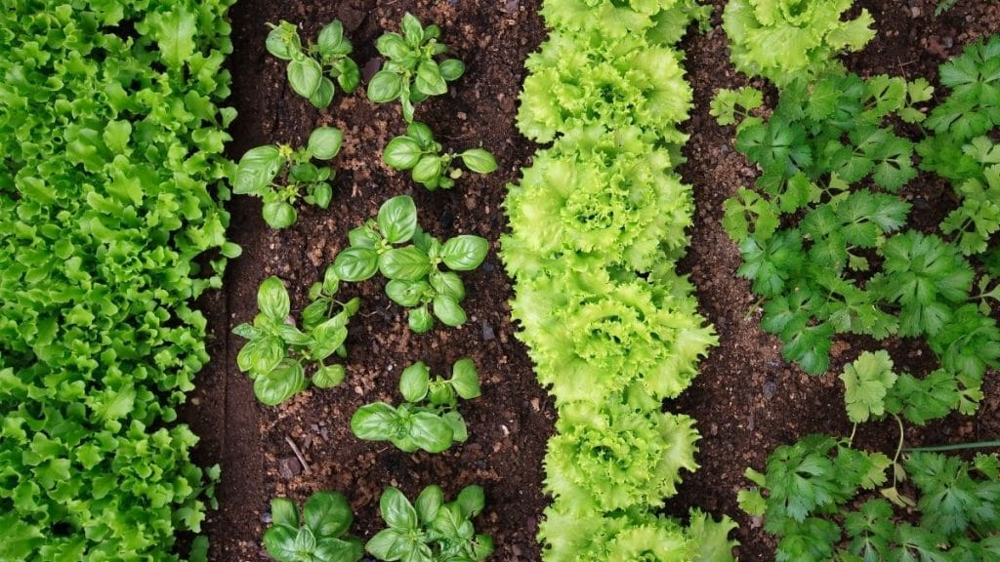

A horta comunitária é um espaço onde os cooperados cultivam verduras e legumes de forma coletiva,dividindo o trabalho e a colheta.
Quem planta sabe esperar,e quem espera sabe colher
Para aprender mais sobre agricultura sustentável,visite o site da Embrapa.
Ficha produzida para a aula de programação web